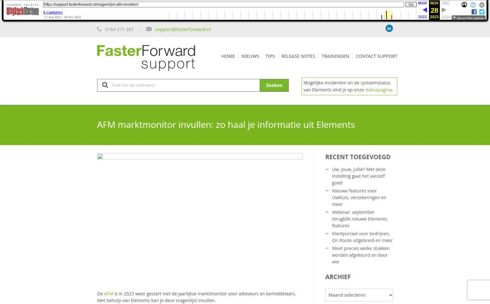

AFM marktmonitor invullen: zo haal je informatie uit Elements

Tekstinhoud
De AFM is in 2023 weer gestart met de jaarlijkse marktmonitor voor adviseurs en bemiddelaars. Met behulp van Elements kan je deze vragenlijst invullen.
Let op: het kan zijn dat jouw organisatie nog geen uitnodiging heeft ontvangen van de AFM. Niet iedereen is tegelijk aan de beurt.
Vragen beantwoorden met Elements
Een aantal vragen in de monitor kun je relatief eenvoudig beantwoorden met gegevens uit Elements. Denk daarbij onder andere aan deze vragen:
Aantal klanten?
Aantal nieuwe producten in 2022?
Aantal producten in beheer?
Aantal klachten?
Gegevens ophalen uit Elements
Om de bovenstaande vragen te beantwoorden, moet je gegevens ophalen uit Elements. Hieronder leggen we in tekst en beeld uit hoe je deze gegevens ophaalt.
Aantal klanten
Het aantal klanten van je kantoor is eenvoudig op te halen. Doorloop de onderstaande stappen.
Klik op het dashboard op de knop ‘Toon uitgebreide filters’
Filter vervolgens op de dossierstatus ‘Klant’
Zet in het veld dossiernummer een ‘%’ teken.
Klik op de knop ‘zoeken’.
Bij de zoekresultaten zie je nu het aantal pagina’s staan. Bijvoorbeeld 1 tot 25. Elke pagina bevat 10 dossiers, dus in dit geval heb je 247 dossiers, dus 247 klanten.
Nieuwe productie in 2022
Ook de nieuwe productie van het afgelopen jaar haal je eenvoudig uit Elements. Volg de onderstaande stappen.
Ga naar ‘Track en Trace’
Filter op startdatum 01-01-2022 tot en met 31-12-2022
Kies bij ‘Type’ een productsoort (Hypotheek, Leven, Schade etc.)
Klik op zoeken.
Bovenin het scherm zie je nu de aantallen staan
Producten in beheer
Ook het aantal producten in beheer haal je uit Elements. Volg de volgende stappen.
Ga naar ‘Track en Trace’
Kies bij ’type’ een productsoort (Hypotheek, Leven, Schade etc.)
Klik op zoeken
Bovenin het scherm zie je het aantal producten van deze soort staan.
Aantal klachten
Als je gebruik maakt van klachten in Elements, kun je dit aantal ook achterhalen. Klachten zijn namelijk taaktypes in Elements. Volg de volgende stappen.
Navigeer in de menubalk naar ‘Taken’
Selecteer rechts het type ‘Klacht’
Filter naast ‘Afgerond’ op aantal taken dat is ‘Afgerond’ en ‘Niet afgerond’
Omzet uit financiële dienstverlening
Wanneer je de boekhouding binnen Elements gebruikt, zie je eenvoudig welke omzet je hebt gemaakt.
Ga in het rechtse menu naar ‘Financieel’ en klik op ‘Balans / Winst & Verliesrekening
Klik op ‘Winst & Verlies’
Let op dat je de juiste periode selecteert
Overzicht grootboekrekening
Per grootboekrekening kun je de resultaten inzien. Selecteer hiervoor wel het hele boekjaar.
Zakelijke schadeverzekeringen
Binnen Track & Trace vind je terug hoeveel schadeverzekeringen er (met pakket info) binnen jouw systeem staan.
Ga naar ‘Track & Trace’
Filter bij ‘Type’ op ‘Schadeverzekering’ en klik op zoeken
Exporteer het overzicht naar Excel
Kijk onder ‘productcategorieën’ of het een zakelijke of particuliere verzekering is.
Polisinformatie
Omdat de resultaten uit ‘Track & Trace’ alleen pakket informatie bevat, kan je voor de polis informatie terecht in de rapportage CRM – Verzekeringsportefeuille.
Geplaatst op 7 januari 2023 (Laatste update: 10 mei 2023)